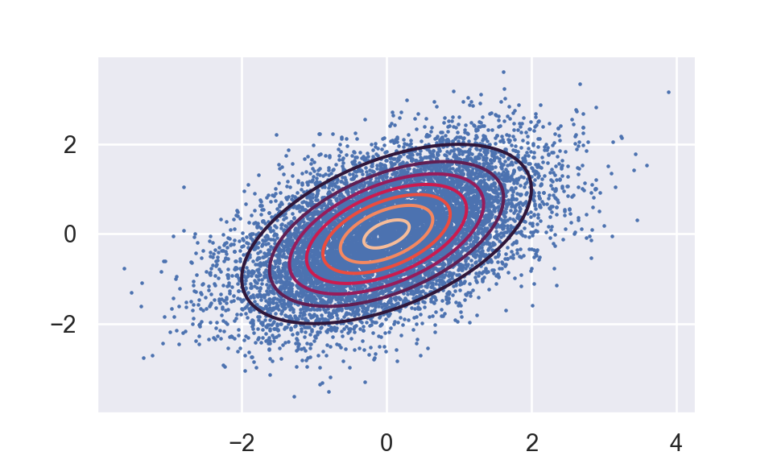

This is a example sample for bivariate normal distribution using Gibbs sampling method.
Random variables \(X_1,X_2\) follow bivariate normal distribution such that
\[ \left(\begin{array}{l} X_{1} \\ X_{2} \end{array}\right) \sim \mathcal{N}\left[\left(\begin{array}{l} 0 \\ 0 \end{array}\right),\left(\begin{array}{ll} 1 & \rho \\ \rho & 1 \end{array}\right)\right] \] From property of bivariate normal distribution, we have that
\[ X_{1} | X_{2} \sim \mathcal{N}\left(\rho X_2,\left(1-\rho^{2}\right) \right) \]
And
\[ X_{2} | X_{1} \sim \mathcal{N}\left(\rho X_1,\left(1-\rho^{2}\right) \right) \]
import numpy as np
import pandas as pd
import matplotlib.pyplot as plt
from scipy.stats import multivariate_normal
np.random.seed(526)
# Gibbs
rho = 0.5
beta1 = np.zeros(11000+1)
beta2 = np.zeros(11000+1)
for i in np.arange(0,11000,1):
beta1[i+1] = rho * beta2[i] + np.sqrt(1-rho**2) * np.random.normal(0,1)
beta2[i+1] = rho * beta1[i+1] + np.sqrt(1-rho**2) * np.random.normal(0,1)
beta1 = beta1[1000:11000]
beta2 = beta2[1000:11000]
# Visulization
x, y = np.mgrid[-3:3:.01, -3:3:.01]
pos = np.empty(x.shape + (2,))
pos[:, :, 0] = x; pos[:, :, 1] = y
rv = multivariate_normal([0, 0], [[1,rho], [rho,1]])
fig,ax = plt.subplots()
temp = ax.scatter(beta1,beta2,s=0.5)
temp = ax.contour(x, y, rv.pdf(pos))
plt.show()
plt.close()
df1 = pd.DataFrame({'x':np.arange(1,10000+1,1),'y':beta1})
df2 = pd.DataFrame({'x':np.arange(1,10000+1,1),'y':beta2})
fig,(ax1,ax2) = plt.subplots(nrows=2,ncols=1)
temp = ax1.plot(df1.x,df1.y)
temp = ax1.set_xlabel("X1")
temp = ax1.set_title("Gibbs Trace Plot")
temp = ax2.plot(df2.x,df2.y)
temp = ax2.set_xlabel("X2")
plt.subplots_adjust(hspace=0.5)
plt.show()plt.close()Robert, Christian P., and George Casella. 2005. Monte Carlo Statistical Methods (Springer Texts in Statistics). Berlin, Heidelberg: Springer-Verlag.